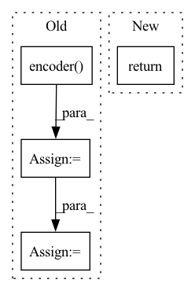

Pattern ID :31448

Before Change
self._init_net(n_features=x.shape[1])
self.encoder.train()
x_pred = self.decoder(self.encoder(x))
loss = self.loss_fn(x_pred, x)
loss_item = loss.item()
mean = self.mean_meter.get()
std = self.var_meter.get() if self.var_meter.get() > 0 else 1
self.mean_meter.update(loss_item)
After Change
x = dict2tensor(x, device=self.device)
self.net.train()
return self._learn_one(x)
def _learn_one(self, x):
x_pred = self.net(x)
In pattern: SUPERPATTERN
Frequency: 5
Non-data size: 4
Instances
Fragment ID: 92101501
Project Name: online-ml/river-torch
Commit Name: 32979e4eca78fc848da61d1ed8fc51d9fc67753e
Time: 2022-07-20
Author: cazzonelli@fzi.de
File Name: river_torch/anomaly/probability_weighted_ae.py
M Class Name: ProbabilityWeightedAutoencoder
N Class Name: ProbabilityWeightedAutoencoder
M Method Name: learn_one(2)
N Method Name: learn_one(2)
M Parent Class: base.Autoencoder
N Parent Class: base.Autoencoder
M File Name: river_torch/anomaly/probability_weighted_ae.py
N File Name: river_torch/anomaly/probability_weighted_ae.py
M Start Line: 47
M End Line: 68
N Start Line: 44
N End Line: 49
'>
Before Change
def forward(self, x):
// x: tensor of shape (batch_size, seq_length, hidden_size)
encoder_hidden = self.encoder(x)
hidden = encoder_hidden
for t in range(self.length):
reconstruct_output, hidden = self.decoder(x, hidden)
After Change
// x: tensor of shape (batch_size, seq_length, hidden_size)
reconstruct_output, hidden = self.decoder(x, self.encoder(x))
return reconstruct_output.view(x.shape[0], -1)
'>
Fragment ID: 92101476
Project Name: tvs-ai/pytorch_rppgs
Commit Name: f4f016c311e1e2e15b7fb36a7e161c8a8d4e394b
Time: 2023-01-02
Author: 57242033+najy97@users.noreply.github.com
File Name: vid2bp/nets/modules/LSTMAutoEncoder.py
M Class Name: LSTMAutoEncoder
N Class Name: LSTMAutoEncoder
M Method Name: forward(2)
N Method Name: forward(2)
M Parent Class: nn.Module
N Parent Class: nn.Module
M File Name: vid2bp/nets/modules/LSTMAutoEncoder.py
N File Name: vid2bp/nets/modules/LSTMAutoEncoder.py
M Start Line: 59
M End Line: 65
N Start Line: 55
N End Line: 57
'>
Before Change
return [optimizer], [scheduler]
def forward(self, X):
feat = self.encoder(X)
// stop gradients from the classifier
logits = self.classifier(feat.detach())
return {"logits": logits, "feat": feat}
def validation_step(self, batch, batch_idx):
After Change
return [optimizer], [scheduler]
def forward(self, *args, **kwargs):
return self._base_forward(*args, **kwargs)
def _base_forward(self, X, detach_feats=True):
feats = self.encoder(X)
'>
Fragment ID: 92101489
Project Name: vturrisi/solo-learn
Commit Name: a47bb52eeeb836a919c105a9dcd27930c9124ec4
Time: 2021-06-14
Author: vt.turrisi@gmail.com
File Name: solo/methods/base.py
M Class Name: BaseModel
N Class Name: BaseModel
M Method Name: forward(1)
N Method Name: forward(2)
M Parent Class: pl.LightningModule
N Parent Class: pl.LightningModule
M File Name: solo/methods/base.py
N File Name: solo/methods/base.py
M Start Line: 205
M End Line: 208
N Start Line: 217
N End Line: 217
'>
Before Change
def forward(self, x):
y = self.encoder(x)
f = self.feature_maker(y)
y_ = self.feature_demaker(f)
x_ = self.decoder(y_, self.encoder.pool_indeces)
return x_
After Change
self.decoder = Decoder(decoder_layers)
def forward(self, x):
return self.decode(self.encode(x))
def encode(self, x):
return self.encoder(x)
'>
Fragment ID: 92101488
Project Name: anderzzz/monkey_caput
Commit Name: 030b5d74b285434e4b91e4727c0183f708c4443e
Time: 2020-10-08
Author: ohrn.anders@gmail.com
File Name: ae_cluster.py
M Class Name: AutoEncoder
N Class Name: AutoEncoder
M Method Name: forward(2)
N Method Name: forward(2)
M Parent Class: nn.Module
N Parent Class: nn.Module
M File Name: ae_cluster.py
N File Name: ae_cluster.py
M Start Line: 179
M End Line: 184
N Start Line: 162
N End Line: 162